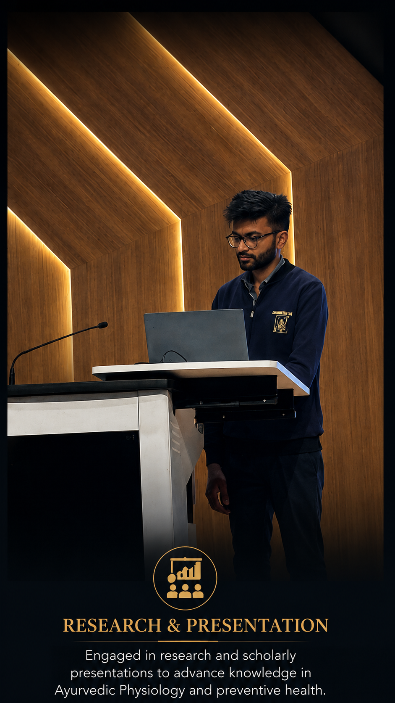

◈
General Ayurvedic Consultation
Individualized Ayurvedic assessment and guidance based on your current concerns, constitution, lifestyle and health goals.
Individualized Ayurvedic consultation, lifestyle guidance and preventive healthcare based on your health concerns, constitution, daily routine and personal goals.
I am a BAMS-qualified Ayurvedic physician with MD Ayurveda (Ayurvedic Physiology) and three years of Junior Resident experience, with clinical, academic and research exposure in Ayurveda. My academic work has developed a particular interest in Ayurvedic physiology, preventive healthcare, lifestyle assessment and the relationship between nutrition, physical fitness and health.
In consultation, I focus on understanding the individual rather than applying a one-size-fits-all approach. Your concerns, constitution, lifestyle, diet, routine and health goals are considered together to develop practical, individualized Ayurvedic guidance.
The aim is not simply to discuss a symptom, but to understand the person and the factors that influence health over time.
Consultation is centered on individualized assessment and practical health guidance. It is intended for people looking for a structured Ayurvedic perspective on their health and lifestyle.
Individualized Ayurvedic assessment and guidance based on your current concerns, constitution, lifestyle and health goals.
Practical guidance around daily routine, nutrition, activity, sleep and sustainable lifestyle habits for long-term wellbeing.
A structured look at individual health patterns and relevant lifestyle factors to support more informed, personalized recommendations.
A personalized approach may be useful for people who want structured guidance rather than generic health advice.

My academic and research experience has involved exploring Ayurvedic concepts through structured scientific inquiry, with interests spanning Ayurvedic physiology, physical fitness, nutrition, preventive health and lifestyle-related outcomes.
This experience has strengthened my approach to evaluating health questions, interpreting scientific literature and connecting classical Ayurvedic concepts with contemporary health science.
Research work on Ayurvedic strength-promoting dietary concepts and their relationship with contemporary nutritional and physiological perspectives.
Published scholarly work • 2025
Online consultation is available for individuals in Gurugram, Delhi, Faridabad, Noida, Ghaziabad and other locations across the Delhi NCR region.
For appointment availability and consultation booking, use the Practo profile.
Book on PractoYes. Online consultations are available through the Practo profile for individuals across Delhi NCR and other locations.
The consultation considers your health concerns, constitution, lifestyle, diet, routine and relevant personal goals to develop individualized guidance.
Ayurvedic Physiology, traditionally studied as Kriya Sharir, concerns the functional principles of the human body described in Ayurveda and their relationship to health and wellbeing.
No. Consultation may also be relevant for people seeking preventive health guidance, lifestyle assessment and individualized wellbeing strategies.
Practical, research-informed articles exploring common health concerns, Ayurvedic concepts, lifestyle, nutrition and personalized care.
{{ post.excerpt | strip_html | truncate: 180 }}
Read Article →Each new article added to the Jekyll posts folder will automatically appear in this section.
This manager stores additions in this browser using localStorage. GitHub Pages is static, so it cannot permanently publish new content for every visitor without a backend/CMS. Use the export function to keep a backup.
For consultation, use Practo. For professional background and academic updates, connect through LinkedIn.
Email: nityagrains@gmail.com